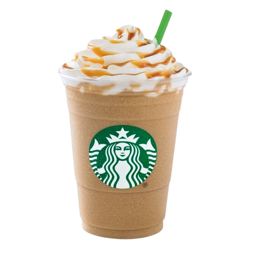

You can choose one of our super tasty food or super energizing coffee drinks.
We have everything you could immagine, only super fresh , organic and km 0 ingredients made with love.
Starbucks® latte is a drink made with espresso and milk. It can be made hot or iced.
Lattes come in different drink sizes, different toppings and the amount of espresso depends on the drink size.
Out of all the espresso-based drinks, lattes are made with the most milk.
Latte
Frapuccino

Coconut
Frapuccino
Starbucks® Coconut iced coffee is inspired by a true Starbucks coffeehouse original.
It's a chilled blend of bold espresso and creamy plant based coconut dairy alternative with hints of cocoa.
A plant based chilled coffee that makes no compromise on taste.
There’s nothing, well, ‘vanilla’ about Starbucks® Vanilla.
Popping with flavour, its bold combination of milk,
coffee and vanilla flavour will leave you with a smile on your face and a happy belly.
Vanilla
Frapuccino


Strawberry
Frapuccino
This popular Starbucks® strawberry,
is a blend of strawberry puree, milk and ice.
Served in a cup coated with more strawberry puree and topped with sweet whipped cream.
it's easy to see why the Strawberry Frappuccino is a customer-favorite.
Starbucks® Chocolate flavored sauce meets up with chocolaty chips,
milk and ice for a blender bash.
Top it off with sweetened whipped cream and
mocha drizzle for a real party in your mouth.